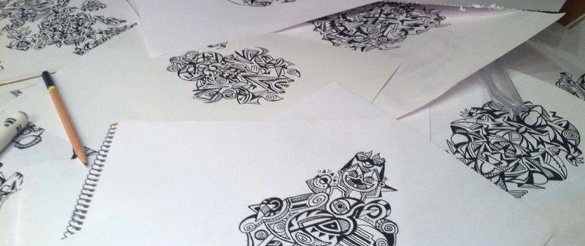
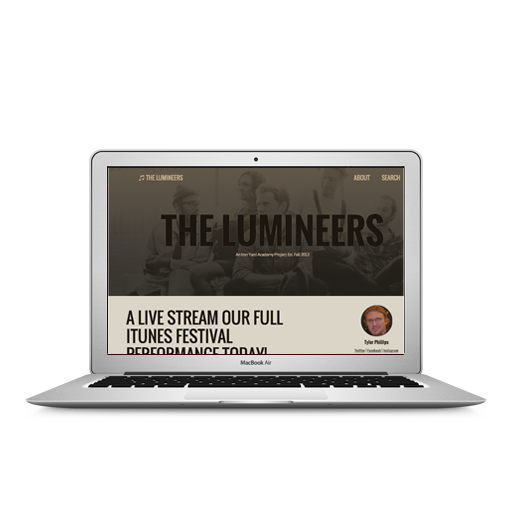

Hello, I'm Tyler Phillips. I'm a front-end engineer, illustrator and graduate of the Iron Yard. And I'm available for hire. Want to get to know me better?
-
Git-Smack Chat ProgramThis project was chat application built using Parse. It was a weekend hackathon and was built as part of a team of three. Not only was it an excercise in hooking a webapp up to Parse, it was also an excercise in teamwork.
-
Celebrity MatchmakerThis was a simple webapp built during a weekend, with the emphasis being on constructors. It is a simple app that takes your select attributes, searches through constructors and returns your celebrity match.
-
Mobber Practice CSSThis was the first project completed at the Iron Yard. It was an excercise to get us a aquainted with HTML and CSS basics.
-
Practice Site CSSThis site was built during my time spent at the Iron Yard. It was an excercise to help understand and practice making a website responsive across differently sized platforms. While I still need to revisit it, the project was a great introduction into the world of responsive sites.
-
Spotify Visual LyricsSpotify Visual Lyrics is an open-source project that will enhance your experience as you listen to music. Enjoy as Google image search randomly finds pictures based off lyrics of the song playing.
-
Get To Know Me
Learning how to write code has been an experience unlike anything else. It wasn't simply learning a new skill. It was learning a new way of thinking. I learned to look at all areas of the problem and analyze them before making a decision. This new way of thinking has taught me to look at all problems differently, whether they involve programming or everyday life.
As I move forward, I'm excited to continue to grow, learn and continue to improve upon my thinking and problem solving abilities.
For a little bit more information about me, check out my Resume and my Open Source Report Card.